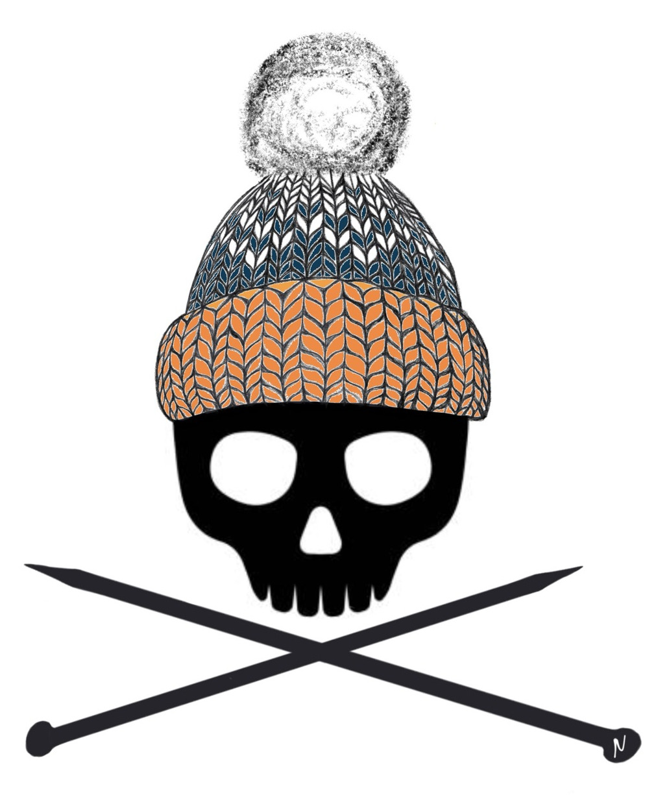

About Us
We started out in 2022 as the Skeleton Park Knitters, meeting weekly at Skeleton Park in Kingston. In 2026, we rebranded as the Skeleton Park Crafters to be more explicitly diverse and inclusive. We also decided on a rotating schedule of locations so that we would have more options, particularly in inclement weather. In addition to our weekly Sunday meetups, we occasionally organize workshops and trips.
For our community forum and up to date information on location changes, please join us on Discord and Instagram.
We meet every week on Sundays from 11-1.
In general, we will be in the following set locations every month. If there are any disruptions (i.e. holidays, weather interruptions, the business has another event that day) we will do our best to post updates here, on our Discord server and on Instagram
- Bring a craft - Please bring a project to work on. You don’t have to knit - any art/craft is welcome, such as crochet, sketching, embroidery, beadwork, etc.
- Be inclusive - All crafts, all ages, all skill levels, all people are welcome. Discrimination, hate speech, bullying, and unkindness are not tolerated. We welcome new members openly.
- No promotions or spam - Sharing a new on-topic project or venture in the Knitting Chatter thread is fine, but this is not the space for advertising, self-promotion, or topics not related to SPC or crafts.
- Be respectful - Be aware of how your topics of conversation might affect others, and consider if SPC is the right venue. We are a pro-science and pro-vaccine group. This is not a space for conspiracy theories or medical/political misinformation.
- Care for our space - whether indoors at a studio, business, or at the park, be aware of and respectful to others using the space. Leave the space better than you found it.
- Ask permission before sharing photos - if you have great pics you want to share on social media, please ask before posting if your photo shows anyone’s faces.
- October 25 at BSE: We will have a button maker and collage materials at our SPC meetup to make name tag badges!
- Friday October 30: Some members of SPC will be attending the Sapphic Frights Queer Halloween Party and crafting in the booths! Tickets are selling fast, but stop by and join us if you're there!